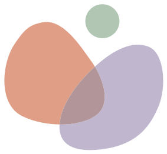

Esta página no existe
Puede que el enlace esté mal escrito, o que la página haya cambiado de sitio. Desde el inicio se llega a todo.

Puede que el enlace esté mal escrito, o que la página haya cambiado de sitio. Desde el inicio se llega a todo.